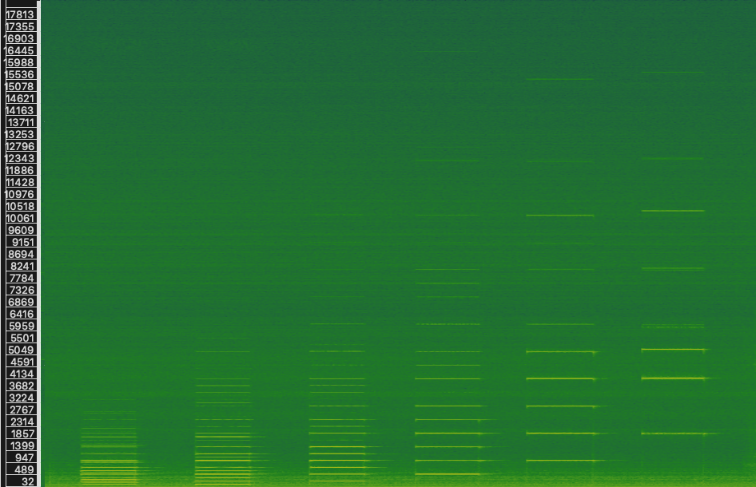

Revisiting the original
synthesizer: spectral
analysis and synthesis of
a Casavant Frères pipe organ
for creative application
in an augmented
instrument context
by Kjel Sidloski
1. Who am I?
2. What's my project?
of project
To explore the intersection of modern and ancient technology by interfacing the pipe organ and software, with the aim of weaving new artistic and poetic expressions, rooted in history, with a lens to the future.
2. What's my project?
Hyper-organ modalities
1. Synthesis
2. Real-time effects
3. Bed tracks
3. What's my proposed presentation about?
Theme of presentation
- Emulations
- Additive
- Subtractive
- Frequency modulation
- Mutations
- Continuous pitches, like glissandi
- Interpolation between different stops
- Dynamic envelope shaping
- Independent control of harmonic content and noise content
- Explosion and contraction of timbral space
- Inharmonic sounds
Spectral Analysis
Synthesis

4. What's the structure of my proposed presentation?
Tables of contents
- 3.1 Additive
- 3.2 Subtractive
- 3.3 Frequency modulation
- 3.4 Mutations / new paradigms
- 3.1 Inspirations
- 3.2 Poetic framework
Introduction
1. Context / hyper-instrument
2. Analysis
3. Synthesis
4. Creative application : Élégies
Conclusion
Bibliographie
Bibliographie
Alary, O. (2020). Vers une musique hantologique instrumentale: Réflexions sur l’écriture technomorphe dans le contexte de la musique instrumentale contemporaine. https://papyrus.bib.umontreal.ca/xmlui/handle/1866/23593
Beilharz, K. A., Jakovich, J., & Ferguson, S. (2006). Hyper-shaku (Border-crossing): Towards the Multi-modal Gesture-controlled Hyper-Instrument. NIME, 352–357.
Comerford, P. (1993). Simulating an Organ with Additive Synthesis. Computer Music Journal, 17(2), 55–65. https://doi.org/10.2307/3680869
Fidom, J. (2011). Ist das Musik⁈ Die Phenomenologie der Orgelimprovisation: The Orgelpark Research Program. Musiktheorie Und Improvisation, Kongressbericht Der IX. Jahrestagung Der Gesellschaft Für Musiktheorie in Mainz, 140–147.
Levenson, T. (1994). Taming the hypercello. The Sciences, 34(4), 15–18.
Machover, T. (1984). Computer music with and without instruments. Contemporary Music Review, 1(1), 203–230.
Machover, T. (1989). Hyper-instruments: Musically intelligent and interactive performance and creativity systems. ICMC Proc., 186–190.
McPherson, A. P., & Kim, Y. E. (2012). The Problem of the Second Performer: Building a Community Around an Augmented Piano. Computer Music Journal, 36(4), 10–27.
Redhead, L. (2014). Sound and Space: Music for Organ and Electronics.
Redhead, L., & Zaldua, A. (2016). The Organ as Live Interface.
Thank you!
If you have any questions:
net@kjel.ca
A special thanks to the OICRM for graciously supporting this project